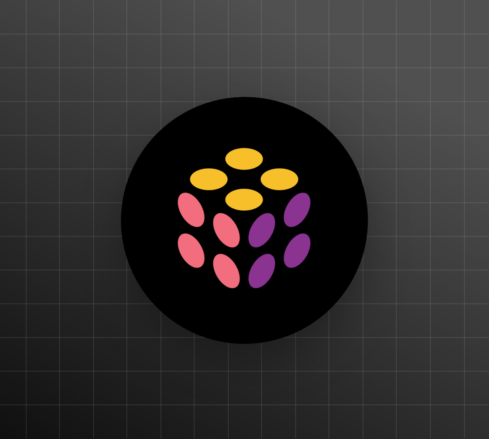
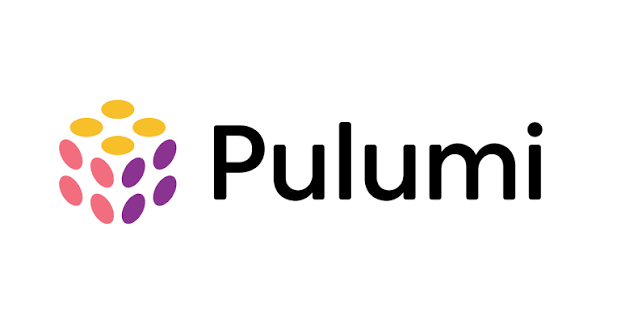

Agnostic, not HCL with Python punctuation

Picking Pulumi over Terraform buys you a programming language. Most of us
never use it. We write HCL with Python punctuation and call it infrastructure as code.
Contents
1. Appropriate tool
As site reliability or devops engineers we have to develop infrastructure as code for our
teams. The goal is to make the creation of infra components faster, by having code that defines the
components and their state instead of doing it by hand with our erring minds.
Today the community follows projects like Terraform, Pulumi and
OpenTofu, which is a community driven fork of Terraform.
Terraform and OpenTofu both have a strong active community and they use
HCL to define your infra resources with provider modules. Pulumi on the other
hand provides programming language specific libraries and modules to define your resources, and it can
bridge Terraform modules into the Pulumi world, so you have a rich set of
modules for your infra.
2. Pick one

Pulumi has the flexibility and power of programming languages, which the
Terraform family doesn't. Terraform modules are more mature than
Pulumi ones, but you can port them to Pulumi, or even execute them directly.
I pick Pulumi because of its resiliency.
3. The code
If you define your components with Pulumi like below:
__main__.py
import pulumi
from pulumi_provider import s3, vm
bucket_1 = s3.Bucket("bucket-1")
bucket_2 = s3.Bucket("bucket-2")
vm_instance_1 = vm.Instance("node-1", tags={"env": "production"})
vm_instance_2 = vm.Instance("node-2", tags={"env": "production"})
pulumi.export("bucket_1", bucket_1.id)
pulumi.export("bucket_2", bucket_2.id)
pulumi.export("vm_instance_1", vm_instance_1.public_ip)
pulumi.export("vm_instance_2", vm_instance_2.public_ip)You'd better return and pick TERRAFORM. WHY?
- because you didn't use programming language abilities
This is HCL with Python punctuation. Every resource is nailed to one provider SDK, nothing
is reusable, and copy-paste is the only way to grow it. You pay the cost of a general purpose language
and you use none of its abilities. Terraform does the same job with a more mature
ecosystem behind it.
4. How to do it
Create models for your components, and write handlers that take those models and create them on a provider.
4.1 Resource models
The model knows nothing about providers. It carries what every provider needs, and a place for the things that only one provider has.
models/vm.py
class VmProvider(Enum):
AWS = "aws"
GCP = "gcp"
AZURE = "azure"
VMWARE = "vmware"
KVM = "kvm"
@dataclass
class Image:
"""Abstract image definition"""
name: str
url: str
version: str
type: ImageType
format: ImageFormat
description: str
tags: List[str] = field(default_factory=list)
provider_support: List[ImageProviderSupport] = field(default_factory=list)
@dataclass
class Vm:
"""Abstract VM definition"""
name: str
description: str
cpus: int
memory: int
disk: int
image: Image
ipv4: List[IPv4Interface]
gw: IPv4Address
tags: List[str]
username: str
ssh_keys: List[str]
ssh_port: int = 22
provider_specific_configs: Dict[VmProvider, Dict] = field(default_factory=dict)
provider_specific_configs is the escape hatch. Without it, the first argument that only
AWS has breaks your model.
4.2 Resource handlers for each provider
The handler is the only place that imports a provider SDK. It takes a Vm and does the
Pulumi stuff.
handlers/aws.py
class AwsVmHandler:
def create_vm(self, vm: Vm) -> aws.ec2.Instance:
extra = vm.provider_specific_configs.get(VmProvider.AWS, {})
return aws.ec2.Instance(
vm.name,
instance_type=self._instance_type(vm.cpus, vm.memory),
ami=self._ami(vm.image),
root_block_device={"volume_size": vm.disk},
key_name=extra.get("key_name"),
tags={"Name": vm.name, **{t: "" for t in vm.tags}},
)handlers/gcp.py
class GcpVmHandler:
def create_vm(self, vm: Vm) -> gcp.compute.Instance:
extra = vm.provider_specific_configs.get(VmProvider.GCP, {})
return gcp.compute.Instance(
vm.name,
machine_type=self._machine_type(vm.cpus, vm.memory),
boot_disk={"initialize_params": {"image": self._image(vm.image), "size": vm.disk}},
network_interfaces=[{"network": extra.get("network", "default")}],
tags=vm.tags,
)Same signature, same input, different cloud.
4.3 Your environments and infra definitions
Your environments become data. No provider imports, no resource calls, just the list of what you have.
Repository layout
envs/
prod/
vms.py
stage/
...envs/prod/vms.py
PROD_VMS = [
Vm(
name="node-1",
description="prod node",
cpus=4, memory=8, disk=20,
gw=IPv4Address("192.168.1.1"),
ipv4=[IPv4Interface("192.168.1.101/24")],
image=ImageRegistry.debian,
tags=["debian", "prod"],
),
Vm(
name="node-2",
description="prod node",
cpus=4, memory=8, disk=20,
gw=IPv4Address("192.168.1.1"),
ipv4=[IPv4Interface("192.168.1.102/24")],
image=ImageRegistry.debian,
tags=["debian", "prod"],
),
]
Because it is data, anyone on the team can review it in a pull request without knowing
Pulumi, and you can test it without touching a cloud account.
4.4 Your main file
What is left is wiring: pick a handler, give it the list.
__main__.py
import pulumi
from envs.prod.vms import PROD_VMS
from handlers.aws import AwsVmHandler
from handlers.gcp import GcpVmHandler
from models.vm import VmProvider
HANDLERS = {
VmProvider.AWS: AwsVmHandler,
VmProvider.GCP: GcpVmHandler,
}
def create_vms(handler):
for vm in PROD_VMS:
instance = handler.create_vm(vm)
pulumi.export(vm.name, instance.id)
def main():
provider = VmProvider(pulumi.Config().require("provider"))
create_vms(HANDLERS[provider]())
main()Now the provider is one line of stack config:
pulumi config set provider gcp
5. What we have
-
Now think that your team wants to migrate VMs from
AWStoGCP: you'll just need to add another simple VM handler. That is the single ~20 line cost of a provider agnostic IaC. -
Think that you want to move your data from
AWStoCloudFlare: you can write a function likebucket_migration(aws_bucket, r2_bucket)to arm your IaC for tasks such as this. -
You decide to write an AI agent to move your infra components between cloud providers because of
lower costs: you just use the
Pulumi automation apito build your agent.
Models, plus one handler per provider. That is what you were paying for when you picked a programming
language over HCL. If you are not going to build it, save the runtime and go write
Terraform.